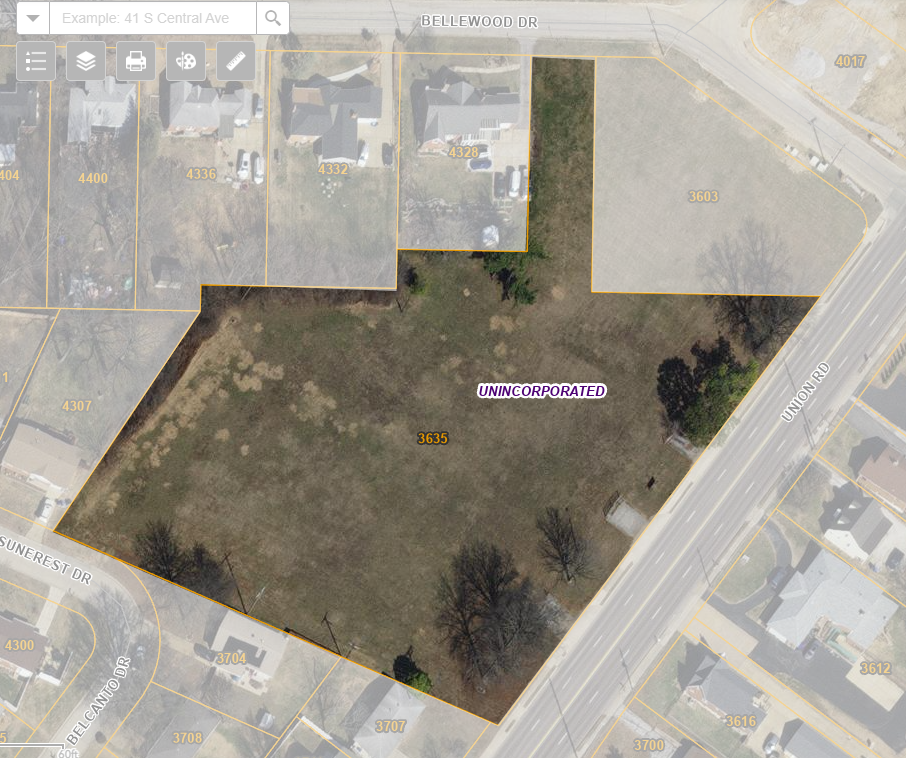

Proposed Pollinator Habitat at 3635 Union Road
Project Vision
Transform a long-vacant 3-acre parcel at 3635 Union Road into a low-maintenance, ecologically valuable native pollinator habitat. The site will feature prairie grasses, wildflowers, and native shrubs designed to support bees, butterflies, birds, and beneficial insects, while enhancing the neighborhood's green space and natural beauty.
Why a pollinator habitat?
- Visibly Maintained:Native prairies have a deliberate, cultivated appearance, reducing perceptions of abandonment or neglect.
- Low-Cover Design:Unlike dense woodlands, prairie ecosystems maintain clear sightlines and do not offer concealed areas for encampments.
- Supports Biodiversity:Encourages populations of native pollinators and birds critical to ecological health.
- Educational Opportunities:Serves as an outdoor classroom for local schools and scout groups.
- Sotrmwater Benefits:Native deep-rooted plants reduce runoff and improve soil health.
Community Friendly Features
- Walking Path:A short, meandering gravel or mowed path through the habitat
- Interpretive Signage:Signs about local flora and fauna
- Benches & Art Installations:Durable, low-profile seating or community-created art
- Volunteer OpportunitiesMaintenance and planting days for schools, churches, and neighbors
Considerations
Addressing Neighborhood Concerns
- Focus on visibility and accessibility: Paths will be short and open
- No playgrounds or shelters—minimizing unintended overnight use
- Designed and maintained in partnership with local conservation professionals to ensure ongoing care
Why a Pollinator Prarie is a Strong Pivot
Focusing on a prairie or native meadow habitat:
- Feels intentionally designed, not “abandoned”
- Is low-profile—less cover for camping or loitering
- Supports birds, butterflies, bees—super palatable to the public
- Can still be beautiful, walkable, and educational
You can still have:
- Paths
- Interpretive signage about pollinators, native plants, stormwater benefits
- Benches or art—without seeming like an invitation to linger overnight
Map and Property Details

3635 Union Road
Saint Louis, MO 63125
2.98 acres
Zoned: Property Class R
Current Owner: First Community Credit Union
Next Steps
- Begin conversations with local officials
- Gauge neighbor and community interest
- Develop a phased planting and maintenance plan with potential partner